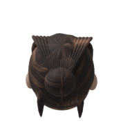
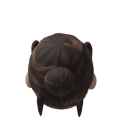
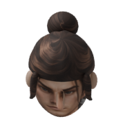

Codex's static-turnaround verdict: pass for continued tests under F04clarity. Ivory/navy/leather separation and a rounded painted hairstyle address the previous material/massing failures. Each revision passes144idle source comparisons. No animation or roster expansion has occurred.
This is a working static-art judgment. The outfits remain simpler than the F04concept. Full motion, all-pose outfit fit, self/PBR lighting and production style approval remain open. The full suite has not passed. V1's rigid comb-like hair silhouette remains preserved.
Downscaled diagnostic crops. Camera, anatomy and lighting differ; this compares style and approximate visible figure height, not world projection or identical design.
These are newly rasterized source head views, not enlarged gameplay pixels. V2selects6active hair components;17legacy parallel locks remain in the neutral data but default to disabled. All23retain Head binding.



0,45,90,135,180,225,270,315degrees. 50/150pxprojected2m body axes; silhouette extents differ. Scroll for native pixels.
Report · Receipt · Scoped visual verdict · Neutral asset · V2pixel checks · Head clearance/source checks · Live local fixture